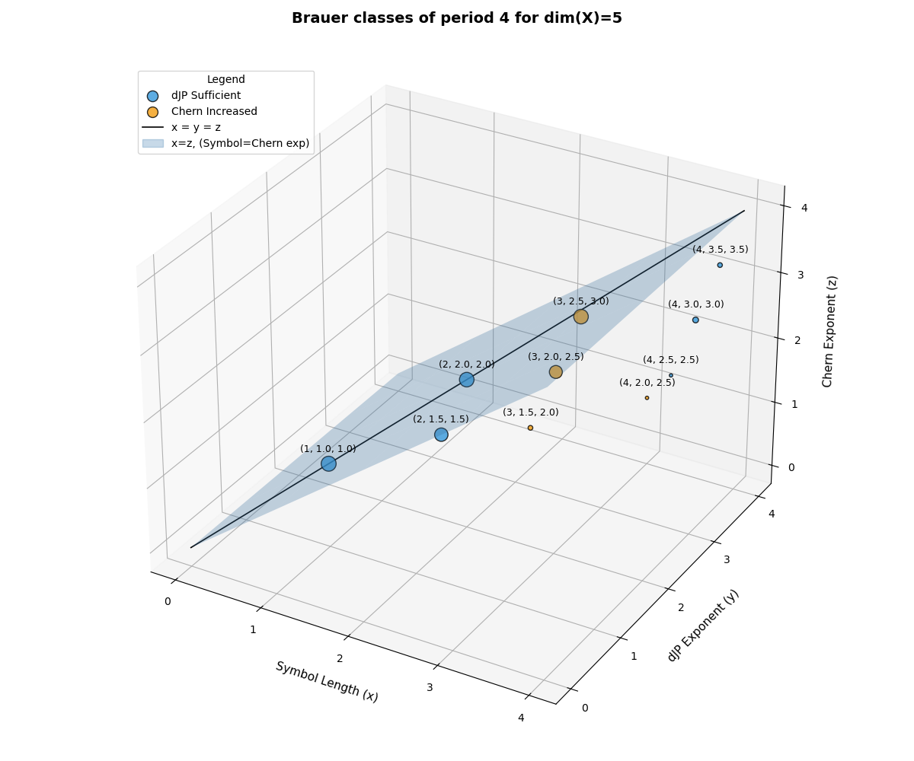
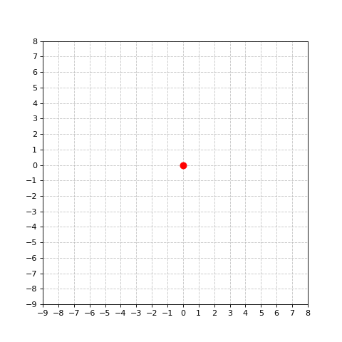

My name is Eoin (pronounced like "Oh-in"). I'm a mathematician working in algebraic geometry. My research explores the interactions between algebra and intersection theory.
I'm currently working at UC Santa Cruz. I'll be on the job market this fall.
It's not always easy to convey the visual nature of mathematical ideas. Here are some of the ways that I've tried using figures to showcase a mathematical concept.

